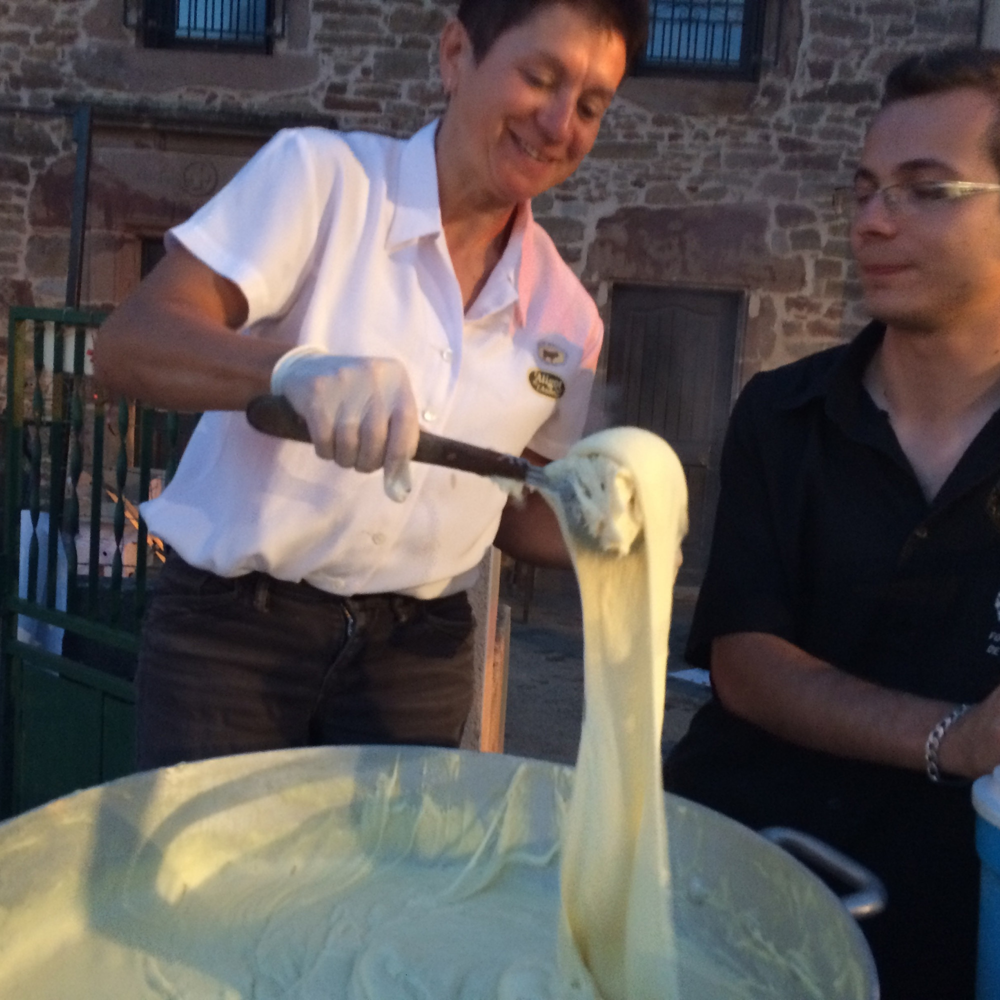

Depuis 1950 le doryphore filé s’éfforce de faire
découvrir a ceux qui le souhaite,
les spécialités de sa région de coeur .
Ma famille et moi même avons toujour mis un point d’honneur
a nous fournir exclusivement de produits locaux et a ne se servir que de ses recettes familliales